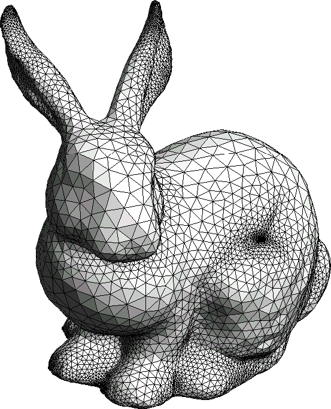

Assume \(\vec{a} \neq \vec{0}\). Which of the following, if any, are true statements? If it is true, explain why. If not, can you come up with a counterexample that shows why not?
If \(\vec{a} \cdot \vec{b} = \vec{a} \cdot \vec{c}\) then \(\vec{b} = \vec{c}\).
If \(\vec{a} \times \vec{b} = \vec{a} \times \vec{c}\) then \(\vec{b} = \vec{c}\).
If \(\vec{a} \cdot \vec{b} = \vec{a} \cdot \vec{c}\) and \(\vec{a} \times \vec{b} = \vec{a} \times \vec{c}\) then \(\vec{b} = \vec{c}\).
Example 1 - Areas of triangles

A somewhat common problem in computer graphics is to calculate the area of a triangle in 3D space using only its coordinates.
Above is an image of the famous Stanford bunny.
This is a standard test case for many discrete geometry and computer graphics algorithms.
This problem also arises in surface strain calculations in mechanics. Below is an image of a triangulated surface of a deforming red blood cell. Small changes in the areas of the triangles are related to the stresses felt when the cell is changing shape.
Can you use the cross product to calculate the area of the triangle with corners \((0,0,0), (1,0,1), (3,-1,2)\)?
Example 2 - PiP
Can you determine if the point \(p = (1,1,0)\) is in the triangle with corners \((2,2,0), (-1,0,0), (3,0,0)\)?
First find vectors \(v_1, v_2, v_3\) that point from \(p\) to each corner.
Use the dot product to find the angles between each pair of vectors.
Calculate the winding number and determine if the point is inside the triangle.
If time, try using the cross product to calculate the winding number.